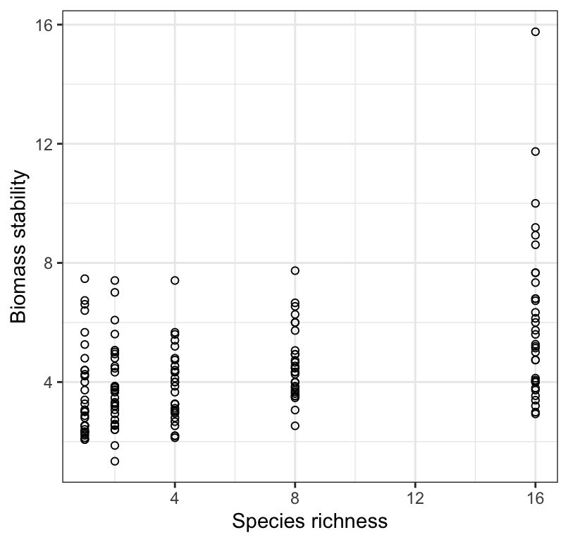
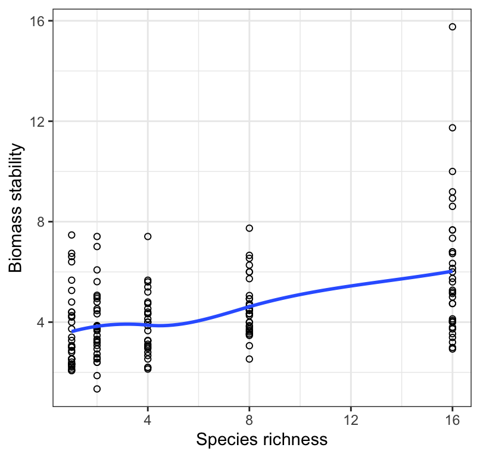
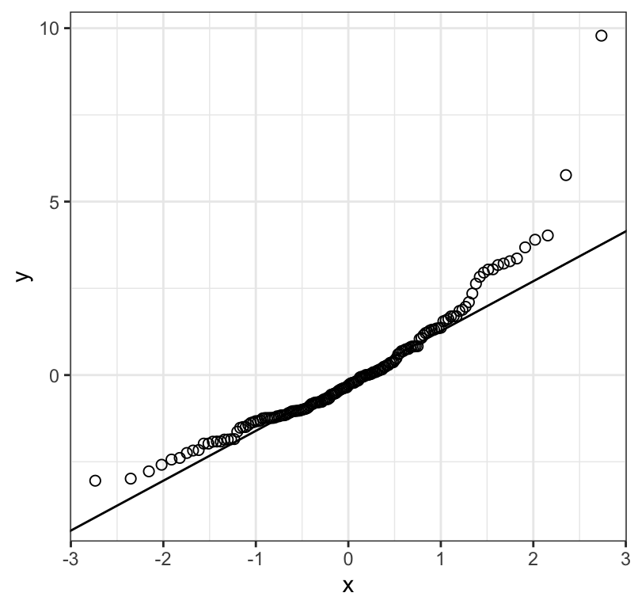
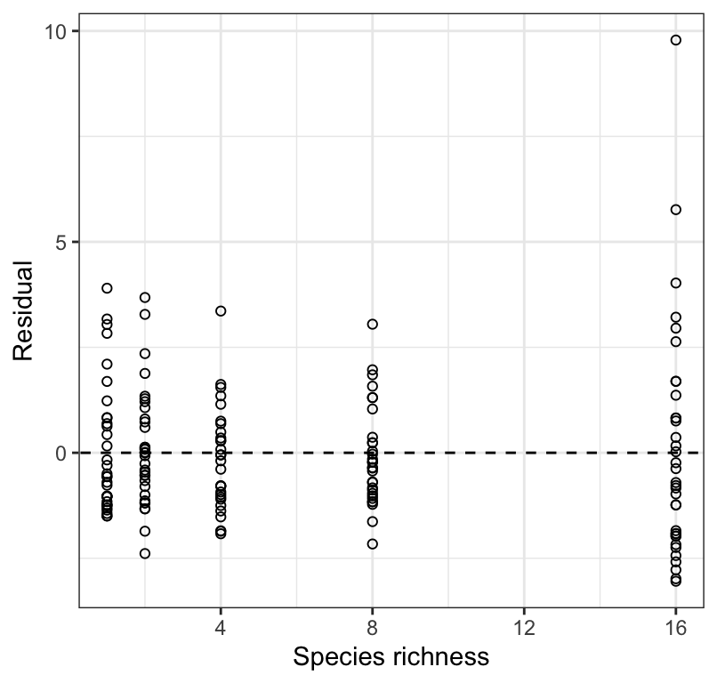
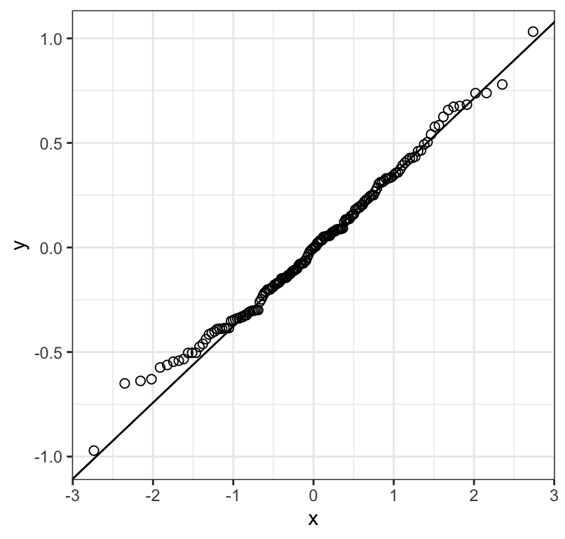
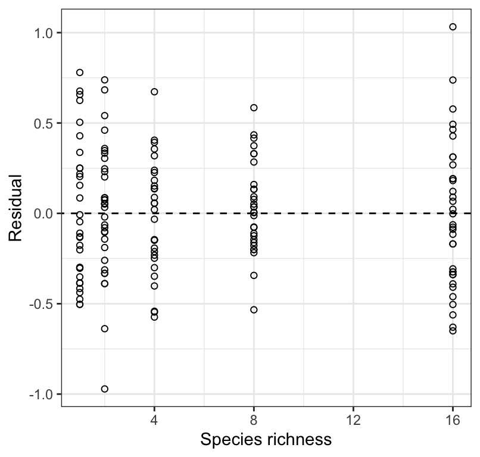
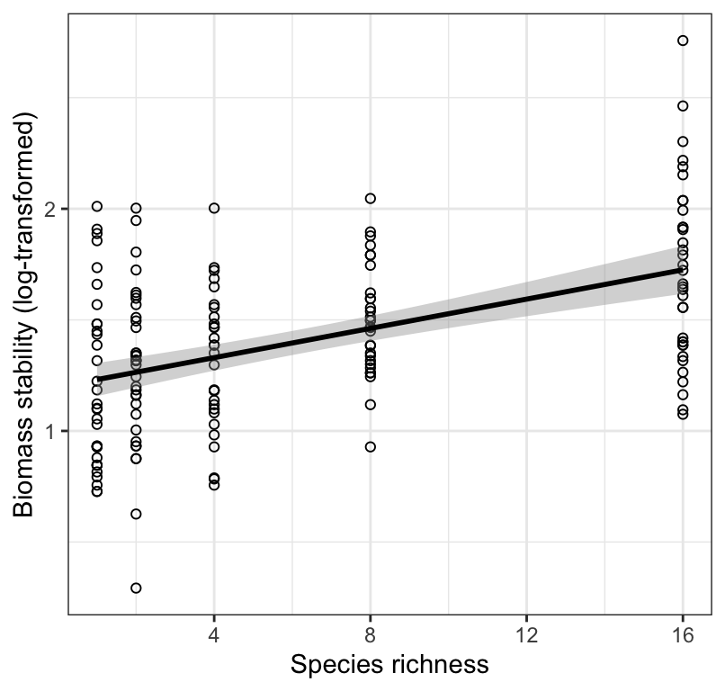
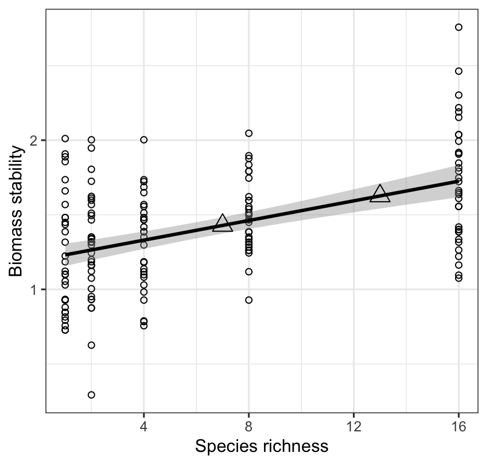

library(dplyr)
library(ggplot2)
library(readr)
library(broom)
library(knitr)
library(biol202)17 Least-squares linear regression
Tutorial learning objectives
- Learn about using least-squares linear regression (“LSR”, also called “Model-1 regression”) to model the relationship between two numeric variables, and to make predictions
- Learn the assumptions of LSR, and how to test whether these assumptions are met
- Learn that the implied statistical null hypothesis for a LSR is that the slope of the relationship is equal to zero
- Learn how to interpret regression analysis output
- Learn about the “coefficient of determination”, \(R^2\), represents the fraction of variation in the response variable that is accounted for by the regression model
- Learn how to make predictions using LRS
- Learn how to implement and report the findings of LSR
17.1 Load packages and import data
Load the packages we need for this tutorial:
We’ll use the “plantbiomass” dataset:
data(plantbiomass)The plantbiomass dataset (Example 17.3 in the text book) includes data describing plant biomass measured after 10 years within each of 5 experimental “species richness” treatments, wherein plants were grown in groups of 1, 2, 4, 8, or 16 species. The treatment variable is called n_species, and the response variable biomass_stability is a measure of ecosystem stability. The research hypothesis was that increasing diversity (species richness) would lead to increased ecosystem stability.
Below is a visualization of the data.

Note
When one visualizes the data, one might ask why an ANOVA isn’t the analysis method of choice. If we were simply interested in testing the null hypothesis that “there is no difference in mean ecosystem stability among the species richness treatment groups”, then an ANOVA could be used, and we would simply treat the “species richness” variable as a categorical variable. However, here we are interested not simply in testing for differences among treatment groups, but more specifically in quantifying if and how ecosystem stability varies with variation in species richness, AND if so, whether we can reliably predict ecosystem stability based on species richness. For this, we need to construct a regression model.
Let’s have a look at the data:
plantbiomass %>% glimpse()
#> Rows: 161
#> Columns: 2
#> $ n_species <dbl> 1, 1, 1, 1, 1, 1, 1, 1, 1, 1, 1, 1, 1, 1, 1, 1, 1, 1…
#> $ biomass_stability <dbl> 7.47, 6.74, 6.61, 6.40, 5.67, 5.26, 4.80, 4.40, 4.40…We see that both variables are numeric, and that there are 161 observations overall.
17.2 Least-squares regression analysis
When we are only interested in the strength of a linear association between two numerical variables, we use a correlation analysis.
When we are interest in making predictions, we use regression analysis.
Often in the literature you see authors reporting regression results when in fact there was no rationale for using regression; a correlation analysis would have been more appropriate.
The two analyses are mathematically related.
Regression analysis is extremely common in biology, and unfortunately it is also common to see incorrect implementation of regression analysis. In particular, one often sees scatterplots that clearly reveal violations of the assumptions of regression analysis (see below).
Failure to appropriately check assumptions can lead to misleading and incorrect conclusions
17.2.1 Equation of a line and “least-squares line”
Recall from your high-school training that the equation for a straight line is:
\(Y\) = a + bX
In regression analysis, the “least-squares line” is the line for which the sum of all the squared deviations in Y is smallest.
In a regression context, a is the Y-intercept and b is the slope of the regression line.
Regression analysis falls under the heading of inferential statistics, which means we use it to draw inferences about a linear relationship between \(Y\) and \(X\) within a population of interest. So in the actual population, the true least-squares line is represented as follows:
\(Y\) = \(\alpha\) + \(\beta\)\(X\)
In practice, we estimate the “parameters” \(\alpha\) and \(\beta\) using a random sample from the population, and by calculating a and b using regression analysis.
Warning
The \(\alpha\) in the regression equation has no relation to the \(\alpha\) that sets the significance level for a test!
Note
The equation for the true least-squares line shown above uses the equation shown in the course text book. However, an alternative way to write the equation is as follows, and includes an error term “\(\epsilon\)”:
\(Y\) = \(\beta_0\) + \(\beta_1\)\(x\) + \(\epsilon\)
17.2.2 Hypothesis testing or prediction?
In general, there are two common scenarios in which least-squares regression analysis is appropriate.
We wish to know whether some numeric variable \(Y\) can be reliably predicted using a regression model of \(Y\) on some predictor \(X\). For example, “Can vehicle mileage be reliably predicted by the weight of the vehicle?”
We wish to test a specific hypothesis about the slope of the regression model of \(Y\) on \(X\). For example, across species, basal metabolic rate (BMR) relates to body mass (M) according to \(BMR = \alpha M^\beta\). Here, \(\alpha\) is a constant. If we log-transform both sides of the equation, we get the following relationship, for which the parameters can be estimated via linear regression analysis:
\(log(BMR) = log(\alpha) + \beta\cdot log(M)\)
Some biological hypotheses propose that the slope \(\beta\) should equal 2/3, whereas others propose 3/4. This represents an example of when one would propose a specific, hypothesized value for \(\beta\).
In the most common application of regression analysis we don’t propose a specific value for the slope \(\beta\). Instead, we proceed with the “default” and unstated null and alternative hypotheses as follows:
H0: \(\beta = 0\)
HA: \(\beta \neq 0\)
In this case, there is no need to explicitly state these hypotheses for regression analysis.
You must, however, know what is being tested: the null hypothesis that the slope is equal to zero.
17.2.3 Steps to conducting regression analysis
In regression analysis one must implement the analysis before one can check the assumptions. Thus, the order of operations is a bit different from that of other tests.
Follow these steps when conducting regression analysis:
- Set an \(\alpha\) level (default is 0.05)
- Provide an appropriate figure, including figure caption, to visualize the association between the two numeric variables
- Provide a sentence or two interpreting your figure, and this may inform your concluding statement
- Conduct the regression analysis, save the output, and use the residuals from the analysis to check assumptions
- Assumptions
- state the assumptions of the test
- use appropriate figures and / or tests to check whether the assumptions of the statistical test are met
- transform data to meet assumptions if required
- if assumptions can’t be met (e.g. after transformation), use alternative methods (these alternative methods are not covered in this course)
- if data transformation is required, then do the transformation and provide another appropriate figure, including figure caption, to visualize the transformed data, and a sentence or two interpreting this new figure
- state the assumptions of the test
- Calculate the confidence interval for the slope and the \(R^2\) value, report these in concluding statement
- If the slope of the least-squares regression line differs significantly from zero (i.e. the regression is significant), provide a scatterplot that includes the regression line and confidence bands, with an appropriate figure caption
- Use the output from the regression analysis (above) draw an appropriate conclusion and communicate it clearly
17.2.4 State question and set the \(\alpha\) level
The plantbiomass dataset (Example 17.3 in the text book) includes data describing plant biomass measured after 10 years within each of 5 experimental “species richness” treatments, wherein plants were grown in groups of 1, 2, 4, 8, or 16 species. The treatment variable is called n_species, and the response variable biomass_stability is a measure of ecosystem stability. The research hypothesis was that increasing diversity (species richness) would lead to increased ecosystem stability. If the data support this hypothesis, it would be valuable to be able to predict ecosystem stability based on species richness.
We will use the conventional \(\alpha\) level of 0.05.
17.2.5 Visualize the data
Using the plant biomass data, let’s evaluate whether ecosystem stability can be reliably predicted from plant species richness.
We learned in an earlier tutorial that the best way to visualize an association between two numeric variables is with a scatterplot, and that we can create a scatterplot using the ggplot and geom_point functions:
plantbiomass %>%
ggplot(aes(x = n_species, y = biomass_stability)) +
geom_point(shape = 1) +
xlab("Species richness") +
ylab("Biomass stability") +
theme_bw()
Note that in the above figure we do not report units for the response variable, because in this example the variable does not have units. But often you do need to provide units!
Note
This figure that you first produce for visualizing the data may or may not be necessary to present with your results. If your least-squares regression does end up being statistically significant, i.e. having a slope that differs significantly from zero, then you’ll create a new figure to reference in your concluding statement (see below). If your regression analysis is non-significant, then you should present and refer to this simple scatterplot (which does not include a best-fit regression line).
17.2.6 Interpreting a scatterplot
In an earlier tutorial, we learned how to properly interpret a scatterplot, and what information should to include in your interpretation. Be sure to consult that tutorial.
We see in Figure @ref(fig:lsrfigone) that there is a weak, positive, and somewhat linear association between biomass stability and Species richness. There appears to be increasing spread of the response variable with increasing values of the predictor (x) variable, and perhaps outliers in the treatment group with greatest species richness. We should keep this in mind.
17.2.7 Checking assumptions of regression analysis
Regression analysis assumes that:
- the true relationship between \(X\) and \(Y\) is linear
- for every value of \(X\) the corresponding values of \(Y\) are normally distributed
- the variance of \(Y\)-values is the same at all values of \(X\)
- at each value of \(X\), the \(Y\) measurements represent a random sample from the population of possible \(Y\) values
Strangely, we must implement the regression analysis before checking the assumptions. This is because we check the assumptions using the residuals from the regression analysis.
Let’s implement the regression analysis and be sure to store the output for future use.
The function to use is the lm function, which we saw in a previous tutorial, but here our predictor (independent) variable is a numeric variable rather than a categorical variable.
Let’s run the regression analysis and assign the output to an object as follows:
biomass.lm <- lm(biomass_stability ~ n_species, data = plantbiomass)Let’s have a look at the untidy output:
biomass.lm
#>
#> Call:
#> lm(formula = biomass_stability ~ n_species, data = plantbiomass)
#>
#> Coefficients:
#> (Intercept) n_species
#> 3.4081 0.1605We’ll learn a bit later how to tidy up this output…
Before we do anything else (e.g. explore the results of the regression), we need to first check the assumptions!
To get the residuals, which are required to check the assumptions, you first need to run the augment function from the broom package on the untidy regression object, as this will allow us to easily access the residuals.
biomass.lm.augment <- biomass.lm %>%
broom::augment()This produces a tibble, in which one of the variables, called “.resid”, houses the residuals that we’re after.
Let’s have a look:
biomass.lm.augment
#> # A tibble: 161 × 8
#> biomass_stability n_species .fitted .resid .hat .sigma .cooksd .std.resid
#> <dbl> <dbl> <dbl> <dbl> <dbl> <dbl> <dbl> <dbl>
#> 1 7.47 1 3.57 3.90 0.0118 1.71 0.0306 2.27
#> 2 6.74 1 3.57 3.17 0.0118 1.72 0.0202 1.84
#> 3 6.61 1 3.57 3.04 0.0118 1.72 0.0186 1.77
#> 4 6.4 1 3.57 2.83 0.0118 1.72 0.0161 1.65
#> 5 5.67 1 3.57 2.10 0.0118 1.73 0.00889 1.22
#> 6 5.26 1 3.57 1.69 0.0118 1.73 0.00576 0.983
#> 7 4.8 1 3.57 1.23 0.0118 1.73 0.00305 0.716
#> 8 4.4 1 3.57 0.831 0.0118 1.73 0.00139 0.483
#> 9 4.4 1 3.57 0.831 0.0118 1.73 0.00139 0.483
#> 10 4.26 1 3.57 0.691 0.0118 1.73 0.000962 0.402
#> # ℹ 151 more rows“Residuals” represent the vertical difference between each observed value of \(Y\) (here, biomass stability) the least-squares line (the predicted value of \(Y\), “.fitted” in the tibble above) at each value of \(X\).
Don’t worry about the other variables in the tibble for now.
Let’s revisit the assumptions:
- the true relationship between \(X\) and \(Y\) is linear
- for every value of \(X\) the corresponding values of \(Y\) are normally distributed
- the variance of \(Y\)-values is the same at all values of \(X\)
- at each value of \(X\), the \(Y\) measurements represent a random sample from the population of possible \(Y\) values
With respect to the last assumption regarding random sampling, we can assume that it is met for the plant experiment example. In experiments, the key experimental design feature is that individuals (here, plant seedlings) are randomly assigned to treatments, and that the individuals themselves were randomly drawn from the population prior to randomizing to experimental treatments. If your study is observational, then it is key that the individuals upon which measurements were made were randomly drawn from the population.
For the first three assumptions, we start by looking at the original scatterplot @ref(fig:lsrfigone), but this time we add what’s called a “locally weighted smoother” line, using the ggplot2 function geom_smooth:
plantbiomass %>%
ggplot(aes(x = n_species, y = biomass_stability)) +
geom_point(shape = 1) +
geom_smooth(method = "loess", se = FALSE, formula = y ~ x) +
xlab("Species richness") +
ylab("Biomass stability") +
theme_bw()
Note the arguments provided for the geom_smooth function.
The smoothing line will make it easier to assess whether the relationship is linear or not. Sometimes it is obvious from the scatterplot that the association is non-linear (curved) (violating the first assumption), and sometimes it is obvious that the spread of the \(Y\) values appears to change systematically (e.g. get bigger) with increasing values of \(X\) (violating the third assumption).
The second assumption is better assessed using the residuals (see below).
In either case, one can try transforming the response variable, re-running the regression analysis using this transformed variable as the new “Y’” variable, then checking the assumptions again.
17.2.7.1 Outliers
Outliers will cause the first three regression assumptions to be violated.
Viewing the scatterplot, keep an eye out for outliers, i.e. observations that look very unusual relative to the other observations. In regression, observations that are far away from the general linear association can have undue influence over the best-fit line. This sounds a bit fuzzy to judge, and it is. There are more formal approaches to evaluating “outliers”, but for now use this approach: If your eye is drawn to an observation because it seems unusual compared to the rest, then you’re probably on to something. In this case, the most transparent and thorough approach is to report your regression results first using the full dataset, and then second, excluding the outlier observations from the analysis.
Two other types of graphs are used to help evaluate assumptions.
We can check the normality of residuals assumption with a normal quantile plot, which you’ve seen previously.
For this, we use the “augmented” output we created above.
biomass.lm.augment %>%
ggplot(aes(sample = .resid)) +
stat_qq(shape = 1, size = 2) +
stat_qq_line() +
theme_bw()
Figure @ref(fig:lsrfigthree) shows that the residuals don’t really fall consistently near the line in the normal quantile plot; there is curviture, and increasing values tend to fall further from the line. This suggests the need to log-transform the data.
Before trying a transformation, let’s also check the assumptions that (i) the variance of \(Y\) is the same at all values of \(X\), and (ii) the assumption that the association is linear. To do this, we plot the residuals against the original “\(X\)” variable, which here is the number of species initially used in the treatment. Note that we’ll add a horizontal line (“segement”) at zero for reference:
biomass.lm.augment %>%
ggplot(aes(x = n_species, y = .resid)) +
geom_point(shape = 1) +
geom_abline(slope = 0, linetype = "dashed") +
xlab("Species richness") +
ylab("Residual") +
theme_bw()
Here we are watching out for:
- a “funnel” shape, or substantial differences in the spread of the residuals at each value of \(X\)
- outliers to the general trend
- a curved pattern
Figure @ref(fig:lsrfigfour) shows that the variance in biomass stability is greatest within the largest species richness treatment. This again suggests the need for a log transformation.
Note
REMINDER: If ever you see a clear outlier when checking assumptions, then a safe approach is to report the regression with and without the outlier point(s) included. If the exclusion of the outlier changes your conclusions, then you should make this clear.
17.2.8 Residual plots when you have missing values
IF there are missing values in either the \(X\) or \(Y\) variables used in the regression, then simply filter those NA rows out before plotting the residuals.
For example, imagine one of the rows in our biomass dataset included a missing value (“NA”) in the “n_species” variable, then we could use this code for producing the residual plot:
biomass.lm.augment %>%
filter(!is.na(n_species)) %>%
ggplot(aes(x = n_species, y = .resid)) +
geom_point(shape = 1) +
geom_abline(slope = 0, linetype = "dashed") +
xlab("Species richness") +
ylab("Residual") +
theme_bw()17.2.9 Transform the data
Let’s log-transform the response variable, creating a new variable log.biomass using the mutate function from the dplyr package:
plantbiomass <- plantbiomass %>%
mutate(log.biomass = log(biomass_stability))Now let’s re-run the regression analysis:
log.biomass.lm <- lm(log.biomass ~ n_species, data = plantbiomass)And augment the output:
log.biomass.lm.augment <- log.biomass.lm %>%
broom::augment()And re-plot the residual diagnostic plots:
log.biomass.lm.augment %>%
ggplot(aes(sample = .resid)) +
stat_qq(shape = 1, size = 2) +
stat_qq_line() +
theme_bw()
log.biomass.lm.augment %>%
ggplot(aes(x = n_species, y = .resid)) +
geom_point(shape = 1) +
geom_abline(slope = 0, linetype = "dashed") +
xlab("Species richness") +
ylab("Residual") +
theme_bw()
Figure @ref(fig:lsrfigfive) shows that the residuals are reasonably normally distributed, and @ref(fig:lsrfigsix) shows no strong pattern of changing variance in the residuals along \(X\), and nor is there an obvious curved pattern to the residuals (which would indicate a non-linear association). We therefore proceed with the analyses using the log-transformed response variable.
17.2.10 Conduct the regression analysis
We have already conducted the main regression analysis above, using the lm function. We stored the output in the log.biomass.lm object. Now, we use the summary function to view the entire output from the regression analysis:
summary(log.biomass.lm)
#>
#> Call:
#> lm(formula = log.biomass ~ n_species, data = plantbiomass)
#>
#> Residuals:
#> Min 1Q Median 3Q Max
#> -0.97148 -0.25984 -0.00234 0.23100 1.03237
#>
#> Coefficients:
#> Estimate Std. Error t value Pr(>|t|)
#> (Intercept) 1.198294 0.041298 29.016 < 2e-16 ***
#> n_species 0.032926 0.004884 6.742 2.73e-10 ***
#> ---
#> Signif. codes: 0 '***' 0.001 '**' 0.01 '*' 0.05 '.' 0.1 ' ' 1
#>
#> Residual standard error: 0.3484 on 159 degrees of freedom
#> Multiple R-squared: 0.2223, Adjusted R-squared: 0.2174
#> F-statistic: 45.45 on 1 and 159 DF, p-value: 2.733e-10What do we need to focus on in this output?
Under the “Estimate” heading, you see the estimated value of the Intercept (a) and of the slope (b), which is reported to the right of the predictor variable name (“n_species”).
Note
There are two values of t reported in the table; one associated with the intercept, and one with the slope. These are testing the implied hypotheses that (i) the intercept equals zero and (ii) the slope equals zero. We are typically only interested in the slope.
At the bottom of the output you’ll see a value for the F statistic, just like you saw in the ANOVA tutorial. It is this value of F that you will report in statements about regression (see below).
We also see the P-value associated with the test of the zero slope null hypothesis, which is identical to the P-value reported for the overall regression (at the bottom of the output).
Warning
It is important to recognize that an overall significant regression (i.e. slope significantly different from zero) does not necessarily mean that the regression will yield accurate predictions. For this we need to assess the “coefficient of determination”, or \(R^2\) value (called “multiple R-squared” in the output), which here is 0.22, and represents the fraction of the variation in \(Y\) that is accounted for by the linear regression model. A value of this magnitude is indicative of a comparatively weak regression, i.e. one that does has predictive power, but not particularly good predictive power (provided assumptions are met, and we’re not extrapolating beyond the range of our \(X\) values).
Before getting to our concluding statement, we need to additionally calculate the 95% confidence interval for the true slope, \(\beta\).
17.2.11 Confidence interval for the slope
To calculate the confidence interval for the true slope, \(\beta\), we use the confint function from the base stats package:
?confintWe run this function on the lm model output:
confint(log.biomass.lm)
#> 2.5 % 97.5 %
#> (Intercept) 1.11673087 1.27985782
#> n_species 0.02328063 0.04257117This provides the lower and upper limits of the 95% confidence interval for the intercept (top row) and slope (bottom row).
17.2.12 Scatterplot with regression confidence bands
If your regression is significant, then it is recommended to accompany your concluding statement with a scatterplot that includes so-called confidence bands around the regression line.
Warning
If your regression is not significant, do not include a regression line in your scatterplot!
We can calculate two types of confidence intervals to show on the scatterplot:
- the 95% “confidence bands”
- the 95% “prediction intervals”
Most of the time we’re interested in showing confidence bands, which show the 95% confidence limits for the mean value of \(Y\) in the population at each value of \(X\). In other words, we’re more interested in predicting an average value in the population (easier), rather than the value of an individual in the population (much more difficult).
To display the confidence bands, we use the geom_smooth function from the ggplot2 package:
?geom_smoothLet’s give it a try, making sure to spruce it up a bit with some additional options, and including a good figure caption, shown here for your reference (this is the code you’d put after the “r” in the header of the R chunk:
fig.cap = "Stability of biomass production (log transformed) over 10 years in 161 plots and the initial number of plant species assigned to plots. Also shown is the significant least-square regression line (black solid line; see text for details) and the 95% confidence bands (grey shading)."
plantbiomass %>%
ggplot(aes(x = n_species, y = log.biomass)) +
geom_point(shape = 1) +
geom_smooth(method = "lm", colour = "black",
se = TRUE, level = 0.95) +
xlab("Species richness") +
ylab("Biomass stability (log-transformed)") +
theme_bw()
There are a few key arguments for the geom_smooth function:
- the “method” argument tells ggplot to use a least-squares linear model
- the “se = TRUE” argument tells ggplot to add confidence bands
- the “level = 0.95” tells it to use 95% confidence level
- the “colour” argument tells it what colour to make the best-fit regression line
Note
You’ll likely see a message stating `geom_smooth()` using formula = 'y ~ x'. This is just ggplot2 confirming what kind of line it fit — a straight line, Y as a function of X — since we didn’t specify a formula ourselves. It is not an error, and you can ignore it.
Here we can interpret the figure as follows:
Figure @ref(fig:lsrfigseven) shows that biomass stability (log-transformed) is positively and linearly related to the initial number of plant species assigned to experimental plots, but there is considerable variation that remains unexplained by the least-square regression model.
17.2.13 Concluding statement
Now that we have our new figure including confidence bands (because our regression was significant), and all our regression output (including confidence intervals for the slope), we’re ready to provide a concluding statement.
Note
We simply report the sample size rather than the degrees of freedom in the parentheses.
As seen in Figure @ref(fig:lsrfigseven), Species richness is a significant predictor of biomass stability: Biomass stability (log) = 1.2 + 0.03(Species richness); F = 45.45; n = 161; 95% confidence limits for the slope: 0.023, 0.043; \(R^2\) = 0.22; P < 0.001). Given the relatively low \(R^2\) value, predictions from our regression model will not be particularly accurate.
Note
It is OK to report the concluding statement and associated regression output using the log-transformed data. However, if you wanted to make predictions using the regression model, it is often desirable to report the back-transformed predicted values (see below).
17.3 Making predictions
Even though the \(R^2\) value from our regression was rather low, we’ll proceed with using the model to make predictions.
It is not advisable to make predictions beyond the range of X-values upon which the regression was built. So in our case (see Figure @ref(fig:lsrfigseven)), we would not wish to make predictions using species richness values beyond 16. Such “extrapolations” are inadvisable.
To make a prediction using our regression model, use the predict.lm function from the base stats package:
?predict.lmIf you do not provide new values of n_species (note that the variable name must be the same as was used when building the model), then it will simply use the old values that were supplied when building the regression model.
Here, let’s create a new tibble called “new.data” that includes new values of n_species (we’ll use 7 and 13 as example values) with which to make predictions:
new.data <- tibble(n_species = c(7, 13))Now let’s make the predictions, and remember that these predicted values of biomass stability will be in the log scale:
predicted.values <- predict.lm(log.biomass.lm, newdata = new.data)
predicted.values
#> 1 2
#> 1.428776 1.626331Let’s superimpose these predicted values over the original scatterplot, using the annotate function from the ggplot2 package.
We re-use the code from our original geom_smooth plot above, and simply add the annotate line of code:
plantbiomass %>%
ggplot(aes(x = n_species, y = log.biomass)) +
geom_point(shape = 1) +
geom_smooth(method = "lm", colour = "black",
se = TRUE, level = 0.95) +
annotate("point", x = new.data$n_species, y = predicted.values, shape = 2, size = 4) +
xlab("Species richness") +
ylab("Biomass stability") +
theme_bw()
As expected, Figure @ref(fig:lsrfigeight) shows the predicted values exactly where the regression line would be! We generally don’t present such a figure… here we’re just doing it for illustration.
17.3.1 Back-transforming regression predictions
The regression model we have calculated above is as follows:
ln(biomass stability) ~ 1.2 + 0.03(species richness)
Thus, any predictions we make are predictions of ln(y). It is sometimes desirable to report predicted values back in their original non-transformed state. To do this, follow the instructions in another tutorial dealing with data transformations.
17.4 Model-I versus Model-II regression
17.4.1 Definitions
Model-I regression is the type we just learned - ordinary least-squares regression. We fit a regression line that minimizes the squared residuals with respect to the “Y” variable.
Model-II regression or “reduced major axis regression” fits a line that minimizes the squared residuals in both the “Y” and “X” direction.
17.4.2 Which one do I use?
The biomass experiment example that we’ve used in this tutorial involved direct manipulation of species richness (number of species), and the response variable that was measured was biomass stability.
For two reasons, this experimental study lends itself to Model-I regression. First, there is good theoretical reasons to expect that manipulation of plant richness can cause changes in plant biomass stability. Thus, there is a causal direction that makes \(X\) a natural “independent” variable and \(Y\) a “dependent” variable. Second, the number of plant species was directly controlled in the experiment, and thus had zero uncertainty associated with its values (biomass stability would have had at least some uncertainty in its estimation). Under either of these conditions, Model-I regression is most appropriate.
Now imagine an observational study in which we randomly sample 40 vegetation plots, and in each, measure plant species richness (number of plant species) and insect species richness. We are interested in predicting insect richness from plant richness, but is Model-I regression appropriate?
This study arguably lends itself more to Model-II regression. Why? First, because it is conceivable that either plant species richness OR insect species richness could be a “dependent” variable or “independent” variable… the causal direction is not clear. Second, both variables were not directly controlled, and therefore there is necessarily some uncertainty involved.
There is some debate about which method should be used in what contexts. If you’re interested in learning more, see this publication and this one.
For this course, you can assume Model-I regression is appropriate for quiz/exam questions, unless otherwise indicated.